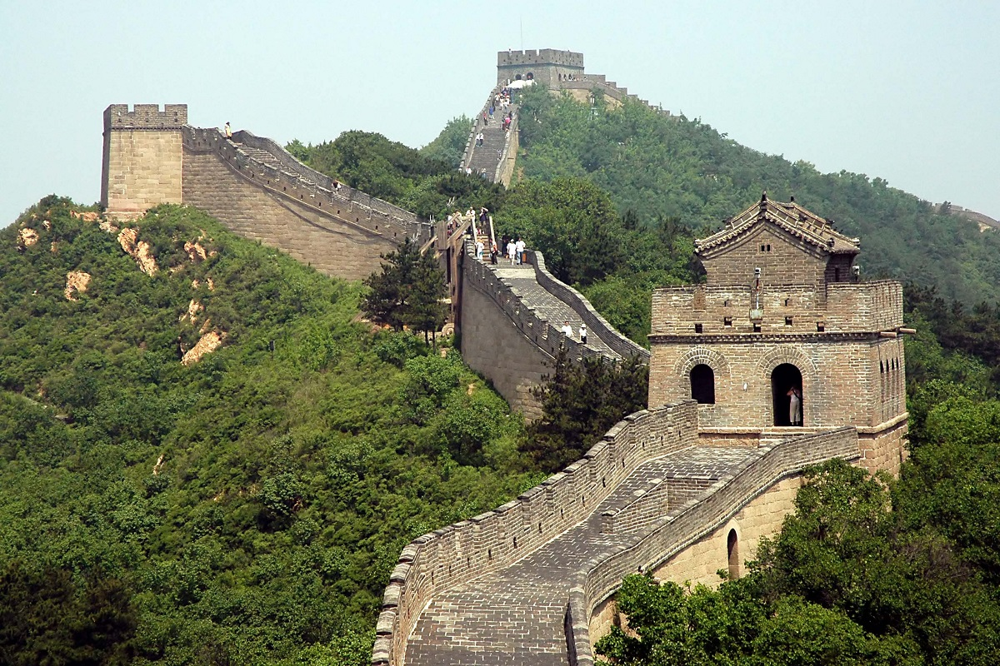

Antonio Montini
LA MURAGLIA CINESE

| Informazioni | |
|---|---|
| Voluta da | Qin Shi Huang |
| Costruzione | 215 a.C.-XIV secolo |
| Ubicazione | Cina |
La Grande Muraglia (長城, 长城, Chángchéng), nata come Wanli changcheng (萬里長城, 万里长城, Wànlǐ Chángchéng, Grande muraglia di 10.000 Lǐ), consiste in una lunghissima serie di mura situate nell'odierna Cina.
Costruita a partire dal 215 a.C. circa per volere dell'imperatore Qin Shi Huang (秦始皇, Qín Shǐ Huáng, Ch'in Shih-huang, letteralmente "Primo Imperatore della dinastia Qin") - lo stesso a cui si deve il cosiddetto Esercito di terracotta di Xi'an - la sua lunghezza è stata considerata, fino a poco tempo fa, di 6.350 chilometri con altezze variabili.
Dalle misurazioni effettuate nel 2009 con più recenti strumentazioni tecnologiche (raggi infrarossi, GPS), la Grande Muraglia risulterebbe lunga 8.850 chilometri, circa 2.500 in più di quelli stimati (di cui circa 350 km di trincee e circa 2250 km di difese naturali).
È stata dichiarata dall'UNESCO patrimonio dell'umanità nel 1987 e inserita nel 2007 fra le sette meraviglie del mondo moderno.
Per sapere di più cliccare il bottone seguente.
Costruita a partire dal 215 a.C. circa per volere dell'imperatore Qin Shi Huang (秦始皇, Qín Shǐ Huáng, Ch'in Shih-huang, letteralmente "Primo Imperatore della dinastia Qin") - lo stesso a cui si deve il cosiddetto Esercito di terracotta di Xi'an - la sua lunghezza è stata considerata, fino a poco tempo fa, di 6.350 chilometri con altezze variabili.
Dalle misurazioni effettuate nel 2009 con più recenti strumentazioni tecnologiche (raggi infrarossi, GPS), la Grande Muraglia risulterebbe lunga 8.850 chilometri, circa 2.500 in più di quelli stimati (di cui circa 350 km di trincee e circa 2250 km di difese naturali).
È stata dichiarata dall'UNESCO patrimonio dell'umanità nel 1987 e inserita nel 2007 fra le sette meraviglie del mondo moderno.
Per sapere di più cliccare il bottone seguente.